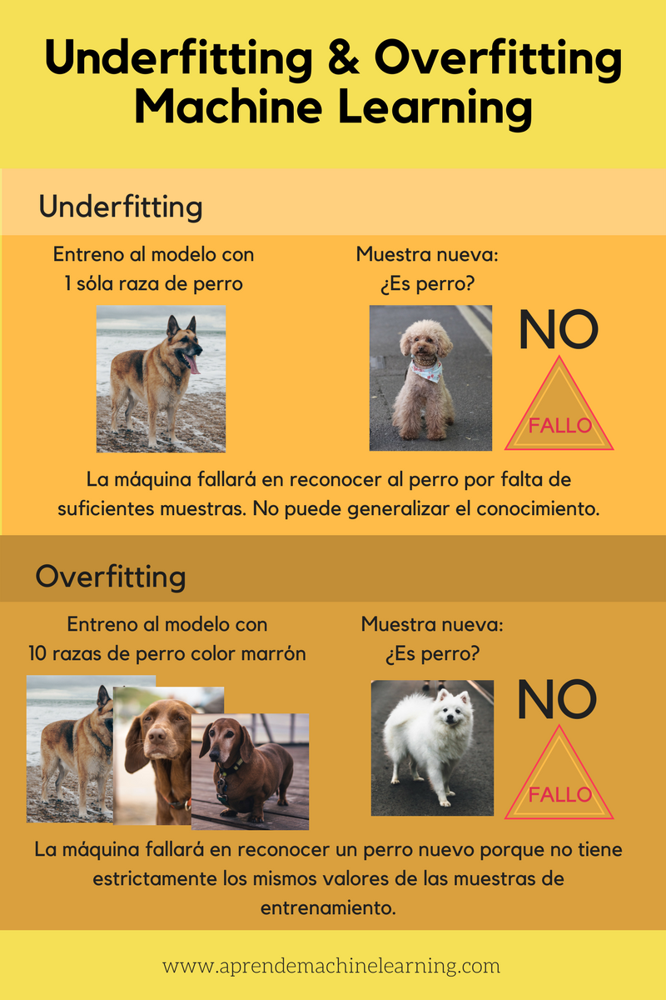

Overfitting y Underfitting
Por Roberto Campos Espejo y Javier Sánchez Felipe
Overfitting y Underfitting
Como ya sabemos, el machine learning funciona dándole al programa ejemplos para que aprenda de ellos. Por lo tanto es muy importante asegurarse de que los datos aportados al programa son correctos, y es que un mal uso de los datos puede provocar que obtengamos malos resultados, como por ejemplo si hacemos overfitting o underfitting de los datos. Para conseguir un buen funcionamiento es necesario que nuestro programa consiga un equilibrio entre overfitting y underfitting y para esto debemos conseguir que nuestro programa sea capaz de generalizar, por ejemplo, si estamos haciendo un algoritmo que identifique perros, debemos ofrecer suficiente información como para que el programa sea capaz de identificar un perro, incluso aunque sea de una raza que no se le ha aportado en su entrenamiento, y poder discernir qué un gato no es un perro, aunque comparta características similares como las cuatro patas.
Si los datos que le aportamos a nuestro programa son pocos esta no será capaz de generalizar el conocimiento, esto es el underfitting. Y si le otorgamos varios datos, pero todos iguales entre sí, tampoco será capaz de generalizar el conocimiento y esto es el overfitting. A continuación mostraremos un ejemplo gráfico, y procederemos a explicar con más detalle overfitting y underfitting.

[5][6]
Overfitting
El overfitting es un suceso que ocurre cuando se ajusta con exactitud un modelo estadístico. Lejos de beneficiar al análisis de los datos,esto perjudica al entrenamiento del modelo, al no permitirle clasificar con rigor los datos y llegar a aprender información irrelevante que perjudica al resultado.
El overfitting (sobreajuste, en español) en el aprendizaje automático sucede cuando se entrena en exceso un algoritmo de aprendizaje. El algoritmo se entrena pasándole una serie de datos junto con el resultado esperado y así el algoritmo va aprendiendo y mejorando sus resultados. El problema aparece cuando el algoritmo se entrena en exceso y queda ajustado a una características muy específicas. Esto ocasiona que al usar datos diferentes puede mostrar un resultado erróneo en situaciones más genéricas. Para que un modelo sea correcto no es necesario que se ajuste a la perfección, sólo que tenga un índice de error aceptable para la resolución del algoritmo. [1] [2]
Underfitting
Underfitting (subajuste, en español) es un término que se utiliza en el aprendizaje automático para definir un modelo incapaz de capturar de forma precisa la complejidad de los datos de entrenamiento, lo que conlleva a tener un modelo demasiado simple e ineficiente, incapaz de hacer predicciones precisas ni aprender patrones importantes en los datos. Este suceso puede ocurrir debido al uso de una secuencia de datos ineficiente, falta de entrenamiento o un mal proceso del entrenamiento, entre otros. Este tipo de problemas se puede solucionar intensificando el nivel de entrenamiento o usando una mayor cantidad de datos, entre otros. [3] [4]
Detección del Overfitting y Underfitting
Existen varias técnicas para detectar la presencia de overfitting y underfitting.
- Curva de error de entrenamiento: Muestra cómo el error del modelo disminuye a medida que se entrena con los datos de entrenamiento. Si la curva sigue disminuyendo incluso después de alcanzar un punto óptimo, es indicio de overfitting.
- Curvas de aprendizaje planas: Las curvas de aprendizaje que muestran un error constante o una disminución lenta sugieren que el modelo no está mejorando con el entrenamiento, por lo tanto es una señal de underfitting.
- Curva de error de validación: Similar a la curva de error de entrenamiento, pero utilizando datos de validación. Si la curva de error de validación comienza a aumentar después de alcanzar un mínimo, mientras que la curva de error de entrenamiento sigue disminuyendo, es una señal de overfitting.
[7]
- Error en el conjunto de entrenamiento: Un error bajo en el conjunto de entrenamiento no significa necesariamente un buen rendimiento. Si el error en el conjunto de validación o en el conjunto de prueba es significativamente mayor, es probable que haya overfitting.
- Error alto en los datos de entrenamiento: Si el error del modelo en los datos de entrenamiento es alto, es un indicio de que el modelo no está aprendiendo lo suficiente de los datos, por lo tanto es una señal de underfitting.
- Rendimiento similar en diferentes conjuntos de datos: Si el modelo tiene un rendimiento similar en los conjuntos de entrenamiento, validación y prueba, es probable que esté sufriendo underfitting y no haya aprendido las características distintivas de cada conjunto.
- Número de características: Un modelo con demasiadas características puede ser propenso al overfitting. Se pueden utilizar técnicas de selección de características para reducir el número de características y mejorar la generalización.
- Multicolinealidad: Si hay alta correlación entre las características, puede haber problemas de multicolinealidad que conducen a un mal rendimiento del modelo.
- Baja varianza: Un modelo con baja varianza predice valores similares para todos los puntos de datos, lo que indica que no ha capturado las relaciones complejas en los datos.
Es importante destacar que, como ya hemos visto, no existe una única técnica para detectar y corregir el overffiting o el underfitting. El enfoque adecuado dependerá del conjunto de datos, el modelo y la tarea en cuestión. Por lo tanto, se puede resumir en que la deteccion de overfitting y underfitting requiere una combinación de técnicas de análisis de gráficos, métricas de rendimiento, validación y características.
Prevención del Overfitting y Underfittting
Existen diversas estrategias para prevenir el overfitting y underfitting.
Selección de datos
- Recopilación de datos de alta calidad: Asegúrarse de que los datos de entrenamiento sean precisos, consistentes y representativos del problema que se quiere resolver.
- Aumento de datos: Incrementar artificialmente el tamaño del conjunto de datos mediante técnicas como la rotación, el cambio de escala y la adición de ruido, lo que puede ayudar a reducir el overfitting.
- Limpieza de datos: Eliminar valores atípicos, errores y ruido en los datos, ya que estos pueden afectar negativamente al rendimiento del modelo.
-
Elección del modelo
-
Selección de un modelo adecuado: Elige un modelo con la complejidad adecuada para la tarea en cuestión. Un modelo demasiado complejo puede ser propenso al overfitting, mientras que uno demasiado simple puede sufrir underfitting.
- Validación cruzada: Utiliza la validación cruzada para evaluar diferentes modelos y seleccionar el que mejor se generaliza a datos no vistos.
Regularización
- Regularización L1 y L2: Aplicar técnicas de regularización L1 o L2 para penalizar la complejidad del modelo y evitar el overfitting.
- Dropout: Implementa dropout en redes neuronales para deshabilitar aleatoriamente neuronas durante el entrenamiento, lo que obliga al modelo a aprender dependencias más robustas entre las características.
- Early Stopping: Detén el entrenamiento del modelo antes de que alcance un punto de sobreajuste. Esto se puede hacer monitorizando el error en un conjunto de validación y deteniendo el entrenamiento cuando el error comienza a aumentar.
Optimización
- Ajusto de hiperparámetros: Ajustar cuidadosamente los hiperparámetros del modelo, como la tasa de aprendizaje y el número de capas ocultas en redes neuronales, para encontrar un equilibrio entre la complejidad del modelo y su capacidad de generalización.
- Selección dde la función de pérdida: Elegir una función de pérdida adecuada para la tarea, como la entropía cruzada para problemas de clasificación o el error cuadrático medio para tareas de regresión.
Interpretación del modelo:
- Análisis de características: Analizar la importancia de las diferentes características para el modelo. Esto puede ayudarte a identificar características irrelevantes o redundantes que podrían estar contribuyendo al overfitting.
- Visualización del modelo: Utilizar técnicas de visualización para comprender mejor cómo funciona el modelo y detectar posibles problemas como el overfitting.
En resumen, la prevención del overfitting y underfitting requiere un enfoque que combine la selección cuidadosa de datos, la elección adecuada del modelo, técnicas de regularización, optimización cuidadosa y una interpretación profunda del modelo. No existe una solución única para todos, y la mejor estrategia dependerá del conjunto de datos específico, el modelo y la tarea en cuestión.
Referencias
[1] https://www.ibm.com/es-es/topics/overfitting#:~:text=El%20%22overfitting%22%20o%20sobreajuste%20es,a%20sus%20datos%20de%20entrenamiento.
[2] https://es.wikipedia.org/wiki/Sobreajuste
[3] https://gamco.es/glosario/underfitting/#:~:text=Underfitting%20es%20un%20t%C3%A9rmino%20utilizado,se%20ajusta%20adecuadamente%20a%20ellos.
[4]https://protecciondatos-lopd.com/empresas/underfitting/
[5]https://www.aprendemachinelearning.com/que-es-overfitting-y-underfitting-y-como-solucionarlo/
[6]https://link.springer.com/article/10.1007/s10270-008-0106-z
[7]https://medium.com/@datascienceeurope/do-you-know-overfitting-and-underfitting-f27f87ac2f37